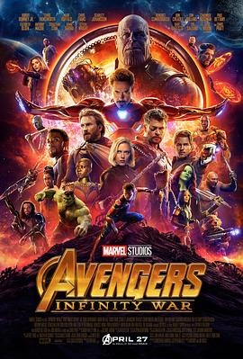

复仇者联盟3：无限战争 / Avengers: Infinity War
又名：复仇者联盟3：无限之战(港) / 复仇者联盟：无限之战(台) / 复仇者联盟3：无尽之战 / 复联3 / 妇联3(豆友译名) / 复仇者联盟3：灭霸传(豆友译名) / Avengers: Infinity War - Part I / The Avengers 3: Part 1
初代复仇者们
作品信息
| 导演 | 安东尼·罗素 / 乔·罗素 |
| 编剧 | 杰克·科比 / 克里斯托弗·马库斯 / 斯蒂芬·麦克菲利 / 吉姆·斯特林 |
| 主演 | 小罗伯特·唐尼 / 克里斯·埃文斯 / 克里斯·海姆斯沃斯 / 斯嘉丽·约翰逊 / 马克·鲁法洛 / 乔什·布洛林 / 本尼迪克特·康伯巴奇 / 汤姆·霍兰德 / 克里斯·帕拉特 / 佐伊·索尔达娜 / 伊丽莎白·奥尔森 / 保罗·贝坦尼 / 查德维克·博斯曼 / 塞巴斯蒂安·斯坦 / 安东尼·麦凯 / 唐·钱德尔 / 汤姆·希德勒斯顿 / 王汉斌 / 戴夫·巴蒂斯塔 / 布莱德利·库珀 / 范·迪塞尔 / 凯伦·吉兰 / 莱蒂希娅·赖特 / 庞·克莱门捷夫 / 凯莉·库恩 / 汤姆·沃恩-劳勒 / 海登·瓦尔希 / 迈克尔·詹姆斯·肖 / 泰瑞·诺塔里 / 本尼西奥·德尔·托罗 / 彼特·丁拉基 / 罗斯·马昆德 / 丹娜·奎里拉 / 温斯顿·杜克 / 塞缪尔·杰克逊 / 寇碧·史莫德斯 / 格温妮斯·帕特洛 / 伊德瑞斯·艾尔巴 / 雅各布·贝塔隆 / 斯坦·李 |
| 类型 | 动作 / 科幻 / 奇幻 / 冒险 |
| 制片国家/地区 | 美国 |
| 语言 | 英语 |
| 上映日期 | 2018-05-11(中国大陆) / 2018-04-23(加州首映) / 2018-04-27(美国) |
| 片长 | 149分钟 |
| IMDb | tt4154756 |
最后一次看到是 2026-08-12T21:12:10+08:00 · 豆瓣原页